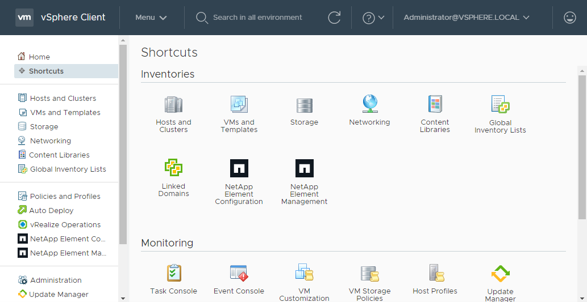

要求變更文件
要求變更文件 編輯此頁面
編輯此頁面 瞭解如何作出貢獻
瞭解如何作出貢獻安裝及設定NetApp Element vCenter Server的VMware vCenter外掛程式
您可以NetApp Element 直接將最新版本的vCenter Server適用的VMware vCenter外掛程式安裝到vCenter、並使用vSphere Web Client存取外掛程式。
安裝完成後、您可以根據儲存I/O控制（QoSSIOC）服務以及vCenter外掛程式的其他服務來使用服務品質。
請閱讀並完成每個安裝步驟、然後開始使用外掛程式：
準備安裝
開始安裝之前、請先檢閱 "部署前需求"。
安裝管理節點
您可以手動進行 "安裝管理節點" 針對執行NetApp Element 的叢集、請使用適合您組態的適當映像。
本手冊程序適用於SolidFire 不NetApp HCI 使用NetApp部署引擎進行管理節點安裝的所有Flash儲存管理員和管理員。
向vCenter登錄外掛程式
在vSphere Web Client中部署vCenter外掛程式套件時、需要將套件登錄為vCenter Server上的擴充功能。註冊完成後、任何連線至vSphere環境的vSphere Web Client都可以使用外掛程式。
-
對於vSphere 6.5和6.7、請確定您已登出vSphere Web Client。如果您未登出、這些版本的Web用戶端將無法辨識在此程序中對外掛程式所做的更新。對於vSphere 7.0、您不需要登出Web用戶端。
-
您有vCenter管理員角色權限可登錄外掛程式。
-
您已部署執行Element軟體11.3或更新版本的管理節點OVA。
-
您的管理節點已開機、並已設定其IP位址或DHCP位址。
-
您使用的是SSH用戶端或網頁瀏覽器（Chrome 56或更新版本、或Firefox 52或更新版本）。
-
您的防火牆規則允許開啟 "網路通訊" 在vCenter與儲存叢集MVIP之間、於TCP連接埠443、8443和9443。連接埠9443用於登錄、可在登錄完成後關閉。如果您已在叢集上啟用虛擬磁碟區功能、請確定TCP連接埠8444也已開啟、可供VASA供應商存取。
您必須在需要使用外掛程式的每個vCenter Server上登錄vCenter外掛程式。
對於連結模式環境、外掛程式必須在環境中的每個vCenter Server上註冊、才能保持MOB資料同步、並能夠升級外掛程式。當vSphere Web Client連線至未登錄外掛程式的vCenter Server時、用戶端將看不到外掛程式。

|
使用NetApp Element vCenter Server的VMware vCenter外掛程式、使用管理其他vCenter Server的叢集資源 "vCenter連結模式" 僅限於本機儲存叢集。 |
-
在瀏覽器中輸入管理節點的IP位址、包括用於登錄的TCP連接埠：
登錄UI會顯示外掛程式的「管理QoSSIOC服務認證」頁面。

-
選用：登錄vCenter外掛程式之前、請先變更QoSSIOC服務的密碼：
-
針對舊密碼、輸入QoSSIOC服務的目前密碼。如果您尚未設定密碼、請輸入預設密碼：
《不一樣》SolidFire
-
選擇*提交變更*。
提交變更之後、QoSSIOC服務會自動重新啟動。
-
-
選取* vCenter外掛程式登錄*。

-
輸入下列資訊：
-
您要登錄外掛程式之vCenter服務的IPV4位址或FQDN。
-
vCenter管理員使用者名稱。
您輸入的使用者名稱和密碼認證必須是具有vCenter Administrator角色權限的使用者。 -
vCenter管理員密碼。
-
（適用於內部伺服器/黑點）外掛程式的自訂URL。
大多數安裝都使用預設路徑。如果您使用HTTP或HTTPS伺服器（黑網站）或修改了ZIP檔案名稱或網路設定、若要自訂URL、請選取*自訂URL*。如需自訂URL的其他步驟、請參閱* 修改Dark站台HTTP伺服器的vCenter屬性。
-
-
選擇*註冊*。
-
（選用）驗證登錄狀態：
-
選取*登錄狀態*。
-
輸入下列資訊：
-
您要登錄外掛程式之vCenter服務的IPV4位址或FQDN
-
vCenter管理員使用者名稱
-
vCenter管理員密碼
-
-
選取*檢查狀態*以確認新版的外掛程式已在vCenter Server上註冊。
-
-
（適用於vSphere 6.5和6.7使用者）以vCenter管理員身分登入vSphere Web Client。
此動作會在vSphere Web Client中完成安裝。如果vSphere中看不到vCenter外掛程式圖示、請參閱 "疑難排解文件"。 -
在vSphere Web Client中、請在工作監控器中尋找下列已完成的工作、以確保安裝完成：「下載外掛程式」和「部署外掛程式」。
修改Dark站台HTTP伺服器的vCenter內容
如果您打算在vCenter外掛程式登錄期間自訂內部（暗站）HTTP伺服器的URL、則必須修改vSphere Web Client內容檔「webclient.properties`」。您可以使用vCSA或Windows進行變更。
從NetApp支援網站下載軟體的權限。
-
SSH至vCenter Server：
Connected to service * List APIs: "help api list" * List Plugins: "help pi list" * Launch BASH: "shell" Command> -
在命令提示字元中輸入「sh地獄」以存取root：
Command> shell Shell access is granted to root
-
停止VMware vSphere Web Client服務：
service-control --stop vsphere-client service-control --stop vsphere-ui
-
變更目錄：
cd /etc/vmware/vsphere-client
-
編輯「webclient.properties`」檔案、然後新增「owfHttp=true」。
-
變更目錄：
cd /etc/vmware/vsphere-ui
-
編輯「webclient.properties`」檔案、然後新增「owfHttp=true」。
-
啟動VMware vSphere Web Client服務：
service-control --start vsphere-client service-control --start vsphere-ui
完成註冊程序之後、您可以從您修改的檔案中移除「allowHttp =true」。 -
重新開機vCenter。
-
從命令提示字元變更目錄：
cd c:\Program Files\VMware\vCenter Server\bin
-
停止VMware vSphere Web Client服務：
service-control --stop vsphere-client service-control --stop vsphere-ui
-
變更目錄：
cd c:\ProgramData\VMware\vCenterServer\cfg\vsphere-client
-
編輯「webclient.properties`」檔案、然後新增「owfHttp=true」。
-
變更目錄：
cd c:\ProgramData\VMware\vCenterServer\cfg\vsphere-ui
-
編輯「webclient.properties`」檔案、然後新增「owfHttp=true」。
-
從命令提示字元變更目錄：
cd c:\Program Files\VMware\vCenter Server\bin
-
啟動VMware vSphere Web Client服務：
service-control --start vsphere-client service-control --start vsphere-ui
完成註冊程序之後、您可以從您修改的檔案中移除「allowHttp =true」。 -
重新開機vCenter。
存取外掛程式並驗證安裝是否成功
成功安裝或升級後NetApp Element 、VMware vSphere Web Client的「捷徑」索引標籤和側邊面板會顯示「VMware組態與管理」擴充點。

|
|
如果看不到vCenter外掛程式圖示、請參閱 "疑難排解文件"。 |
新增儲存叢集以搭配外掛程式使用
您可以使用NetApp Element 「支援組態」擴充點來新增執行元素軟體的叢集、以便由外掛程式來管理。
建立叢集連線之後、即可使用NetApp Element 「叢集管理」擴充點來管理叢集。
-
至少必須有一個叢集可用、且其IP或FQDN位址為已知。
-
叢集的目前完整叢集管理使用者認證。
-
防火牆規則允許開啟 "網路通訊" 在vCenter和叢集MVIP之間、於TCP連接埠443和8443。
|
|
您必須至少新增一個叢集、才能使用NetApp Element 「支援不支援功能」的擴充點功能。 |
本程序說明如何新增叢集設定檔、以便由外掛程式管理叢集。您無法使用外掛程式修改叢集管理員認證。
請參閱 "管理叢集管理員使用者帳戶" 以取得變更叢集管理員帳戶認證的指示。

|
vSphere HTML5 Web用戶端和Flash Web用戶端有不同的資料庫、無法合併。在一個用戶端中新增的叢集將不會顯示在另一個用戶端中。如果您打算同時使用這兩個用戶端、請在這兩個用戶端中新增叢集。 |
-
選擇* NetApp Element 《組態*》>*《叢集*》。
-
選取*新增叢集*。
-
輸入下列資訊：
-
* IP位址/FQDN：輸入叢集MVIP位址。
-
使用者ID：輸入叢集管理員使用者名稱。
-
密碼：輸入叢集管理員密碼。
-
* vCenter Server*：如果您設定連結模式群組、請選取您要存取叢集的vCenter Server。如果您未使用連結模式、則目前的vCenter Server為預設值。
-
叢集的主機是每個vCenter Server專屬的。請確定您選取的vCenter Server可存取目標主機。您可以移除叢集、將其重新指派給另一個vCenter Server、如果您稍後決定使用不同的主機、也可以重新新增叢集。
-
使用NetApp Element vCenter Server的VMware vCenter外掛程式、使用管理其他vCenter Server的叢集資源 "vCenter連結模式" 僅限於本機儲存叢集。
-
-
-
選擇*確定*。
程序完成後、叢集會出現在可用叢集清單中、並可用於NetApp Element 「畫面管理」擴充點。
使用外掛程式設定QoSSIOC設定
您可以根據儲存I/O控制設定自動服務品質 "（QoSSIOC）" 適用於由外掛程式控制的個別磁碟區和資料存放區。若要這麼做、您可以設定QoSSIOC和vCenter認證、讓QoSSIOC服務能夠與vCenter通訊。
為管理節點設定有效的QoSSIOC設定之後、這些設定就會成為預設值。QoSSIOC設定會回復到上次已知的有效QoSSIOC設定、直到您為新的管理節點提供有效的QoSSIOC設定為止。在設定新管理節點的QoSSIOC認證之前、您必須先清除已設定管理節點的QoSSIOC設定。
-
選擇* NetApp Element 《組態》>「QoSSIOC設定」*。
-
按一下「動作」。
-
在產生的功能表中、選取*設定*。
-
在「設定QoSSIOC設定」對話方塊中、輸入下列資訊：
-
* mNode IP Address/FQDN：包含QoSSIOC服務之叢集的管理節點IP位址。
-
* mNode Port*：包含QoSSIOC服務之管理節點的連接埠位址。預設連接埠為843。
-
* QoSSIOC使用者ID *：QoSSIOC服務的使用者ID。QoSSIOC服務的預設使用者ID為admin。對於僅供使用的部分、使用者ID與使用NetApp部署引擎安裝期間輸入的ID相同。NetApp HCI
-
* QoSSIOC密碼*：元素QoSSIOC服務的密碼。QoSSIOC服務的預設密碼為SolidFire 「SESS'」。如果您尚未建立自訂密碼、可以從登錄公用程式UI（「https://[management節點IP」：9443）建立自訂密碼。
-
* vCenter使用者ID*：vCenter管理員擁有完整管理員角色權限的使用者名稱。
-
* vCenter密碼*：vCenter管理員擁有完整管理員角色權限的密碼。
-
-
按一下「確定」。當外掛程式能夠與服務成功通訊時、「* QoSSIOC狀態*」欄位會顯示「UP」。
請參閱 "KB" 若要疑難排解狀態是否為下列任一項目：「診斷」：未啟用QoSSIOC。「未設定」：尚未設定QoSSIOC設定。*「網路中斷」：vCenter無法與網路上的QoSSIOC服務通訊。mNode和SIOC服務可能仍在執行中。 啟用QoSSIOC服務之後、您可以在個別資料存放區上設定QoSSIOC效能。
設定使用者帳戶
若要啟用對磁碟區的存取、您必須至少建立一個磁碟區 "使用者帳戶"。